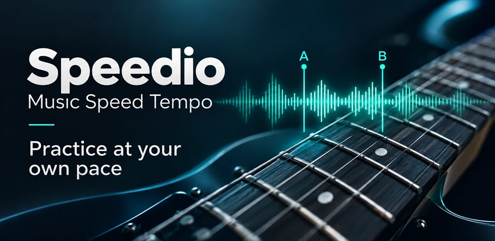

Pratique no seu ritmo.
Desacelere a música sem alterar a altura das notas. O Speedio é um player para Android feito para guitarristas e outros músicos que aprendem de ouvido.


Do riff ao solo completo
Marque os pontos A e B, dê um nome ao loop e volte a ele na próxima sessão. O Speedio estima o andamento (BPM) e a tonalidade dos arquivos de áudio locais. Você também pode abrir links compatíveis, inclusive do YouTube, e criar playlists.

Aprenda um solo rápido, frase por frase
Abra uma gravação e reduza a velocidade de um compasso difícil até conseguir distinguir cada nota. A altura das notas se mantém, então você pode acompanhar a gravação com a afinação original. Depois de algumas repetições regulares, aumente o andamento e ouça onde a última nota cai em relação à pulsação.
Retome o mesmo compasso na próxima sessão
Afaste dois dedos na linha do tempo para marcar com precisão o início e o fim do loop A–B. Trave os pontos enquanto navega pela faixa. Salve a frase como “Entrada do solo”. Na próxima sessão, abra a música pelo histórico ou por uma playlist e selecione o loop salvo.